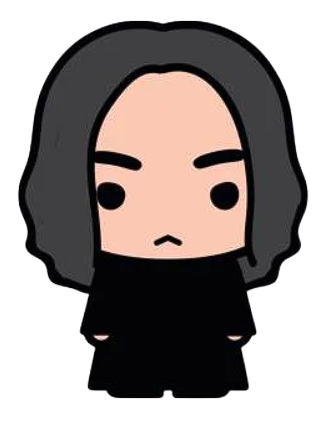
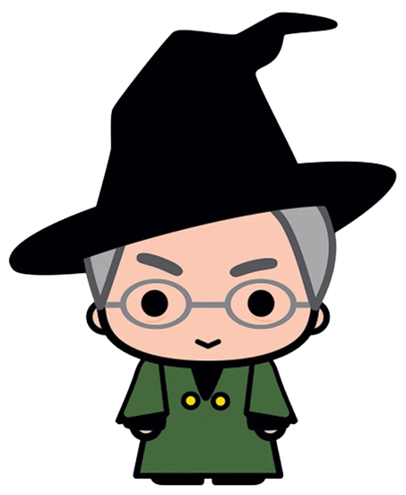
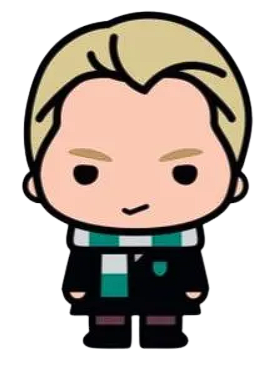
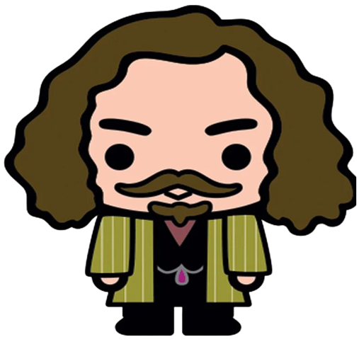
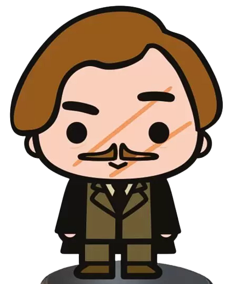

|  | Severus Snape was Potions Master, Defence Against the Dark Arts teacher, and Head of Slytherin House at Hogwarts School of Witchcraft and Wizardry; he succeeded Albus Dumbledore as Headmaster. He was personally killed by Lord Voldemort and his snake, Nagini.Although he was a Death Eater at one time, he became a member of the Order of the Phoenix working secretly against the Dark Lord. Snape’s regret over the death of his lost love, Lily Evans, kept him going as a double spy till the end of his life. |
|  | Minerva McGonagall was the Transfiguration professor and Deputy Headmistress at Hogwarts for over forty years, and a powerful witch and Animagus. McGonagall has a stern exterior, keeping her classes strictly controlled and following the rules closely, yet has a warm heart and cares deeply for her friends and students. She also played a vital role in the Order of the Phoenix, valiantly directing the final battle against Voldemort. Professor McGonagall has dark hair which she pulls into a bun, wears glasses, and is frequently dressed in tartan plaids . |
|  | Draco Malfoy is the son and only child of Lucius and Narcissa Malfoy and was a student at Hogwarts in the same year as Harry Potter. He is a rival of Harry, actively trying to undermine him in any way he can. Draco has white-blond hair and a pale, pointed face. He owns an eagle owl which made almost daily deliveries of sweets from home. Draco became the Slytherin Quidditch team’s Seeker after his father made a generous donation of Nimbus 2001 brooms to the team. |
|  | sirius Black was James Potter’s closest friend, Harry Potter’s godfather, and an Animagus, who was falsely accused of betrayal and murder and imprisoned in Azkaban. Unlike his younger brother Regulus and just about all of his ancestors, Sirius was sorted into Gryffindor and rejected his family’s belief in pure-blood supremacy. By the time he was sixteen, he had completely severed ties with his family and was literally blasted off of the Black family tree.At Hogwarts, Sirius became close friends with fellow Gryffindors James Potter, Peter Pettigrew and Remus J Lupin, a werewolf.They were collectively known as the MARAUDERS. |
|  | Remus Lupin was a contemporary of James Potter, Sirius Black and Peter Pettigrew (together they were known as “The Marauders“)and he was appointed as a prefect from his fifth year at Hogwarts School. He became a professor of Defence Against the Dark Arts at during Harry Potter’s third year, but was unable to continue to the following year when it was revealed that he was a werewolf. |